Один файл .py. Когда вы пишете import orders.pricing, интерпретатор находит файл pricing.py, выполняет его сверху вниз и кладёт получившиеся имена в объект модуля.
Раздел 2 · Python bridge и рефакторинг · занятие 5
Структура пакета
и типизированный
публичный интерфейс
105 строк → 9 модулейsrc-layoutruff · mypy · pytest2 часа
С чего начнём · один файл, две папки
Одну и ту же программу запустили дважды
Две команды подряд: сначала orders.py из папки проекта, потом тот же файл — из папки выше. Ни код, ни данные между запусками не менялись.
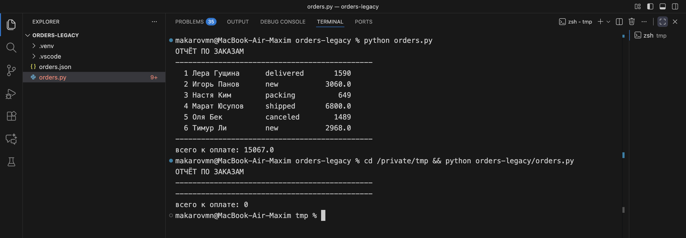
Первый запуск: 15067.0. Второй: 0. Отчёт не упал и не пожаловался — он посчитал по пустому списку заказов. Такой отказ страшнее падения: ноль уходит дальше по цепочке как настоящее число.
Диагностика · три строки, из-за которых так вышло
Файл ищет данные рядом с тем местом, откуда его запустили
Путь "orders.json" — относительный. Интерпретатор разворачивает его от текущей рабочей папки, а она задаётся не файлом, а тем, откуда вы вызвали python. Из orders-legacy файл находится, из /private/tmp — уже нет.
Дальше срабатывает вторая строка: os.path.exists вернул False, и функция молча положила в LOADED пустой список. Ветка «файла нет» написана так, будто заказов действительно ноль, — а на деле мы просто не там ищем.
orders.py · строки 8, 13–17
DATA_FILE = "orders.json" LOADED = [] def load(): global LOADED if not os.path.exists(DATA_FILE): LOADED = [] # ← отсюда и ноль return LOADED
Тема занятия
Где живёт проект и что он обещает наружу
Сегодня мы берём тот самый orders.py и превращаем его в пакет. Разберём четыре вещи, и каждая из них закрывает свою поломку.
- 01Где лежит код и откуда он запускается —
src-layout и установка пакета - 02Из чего пакет состоит — модули, границы и правило «что кладём куда»
- 03Что пакет показывает наружу — публичный интерфейс и
__all__ - 04Что обещают функции — типы на входе и выходе, проверка до запуска
Пятое мы получим в подарок и потратим на него отдельные пятнадцать минут: как только у модулей появятся границы, между двумя из них возникнет циклический импорт. Мы сделаем его специально, посмотрим на настоящий traceback и разорвём.
Термин 1 · модуль и пакет
Модуль — это файл. Пакет — папка с файлами и общим именем
Папка, внутри которой лежит __init__.py. Она отвечает за общее имя: все файлы внутри доступны как orders.что-то. Сам __init__.py выполняется первым, когда пакет импортируют.
Имя пакета — единственное, что видят снаружи: тесты, соседний сервис, будущий FastAPI-слой. Пока код лежит одним файлом, его имя совпадает с именем файла, и любое переименование ломает чужие импорты.
имя — это обязательствоМы будем говорить «модуль» про файл и «пакет» про папку. В курсе так же названы папки: src/orders/ — пакет, src/orders/pricing.py — модуль внутри него.
Карта импортов · состояние 1 из 5
Пока файл один, карта импортов выглядит так
↻
orders.py · 105 строк · 8 функций · 3 общие переменные
DATA_FILEPROMOLOADED
loadsavefindtotalcan_cancelcancelcreatereport
Стрелок нет, потому что импортировать нечего: все восемь функций видят друг друга и все три переменные. Красным помечены общие переменные — их меняет любая функция в любой момент, и по коду не видно, кто именно испортил LOADED.
Цена такой карты: проверить total отдельно нельзя — она тянет за собой PROMO; проверить cancel нельзя — она пишет на диск; и заменить хранение файла на базу тоже нельзя, не тронув всё остальное.
Четыре признака · всё из нашего файла
Когда файл пора резать
cancel() проверяет правило, меняет статус, пишет на диск и печатает в консоль. Проверить только правило нельзя — тест обязан подсунуть файл и перехватить вывод.
«Отменённый заказ не входит в сумму» живёт строкой if o["status"] != "canceled" внутри печати отчёта. Второй экран с той же суммой повторит эту строку — и однажды они разойдутся.
LOADED заполняет load(), а читают её find, total, report и create. Порядок вызовов нигде не записан: забыли load() — получили пустой отчёт без единой жалобы.
s в total() начинается целым, а после s - s * p / 100 становится дробным. Поэтому в отчёте рядом стоят 1590 и 3060.0. Пока типов нет, это заметит только глаз.
Ни один из признаков не про размер файла. Сто строк — не проблема; проблема в том, что эти сто строк нельзя тронуть по частям.
Порядок работы · то же самое расписано в lesson_05/README.md
Девять шагов и признак, по которому видно, что шаг получился
№что делаем
командакак понять, что получилось0Забрать папку занятия из шаблона
git checkout upstream/main -- lesson_05ls lesson_05 показывает stend и homework1Завести ветку на занятие
git switch -c lesson-05работа пары идёт в неё, а не в main2Скопировать стенд и собрать окружение
cp -r lesson_05/stend lesson_05/orders-serviceв приглашении терминала появилось (.venv)3Воспроизвести отказ, с которого начали
python orders.pyиз папки проекта 15067.0, из папки выше 04Разрезать на модули
mkdir -p src/orders data tests docsу каждого модуля в docstring названа причина меняться5Собрать pyproject.toml и поставить пакет
pip install -e .python -m orders data/orders.json работает из любой папки6Сломать намеренно и починить
python -m orders … | tee docs/incident-05.mdтрассировка сохранена, связь разорвана передачей данных7Прогнать проверки
ruff check . && mypy && pytest -qтри ответа подряд без ошибок8Нарисовать карту импортов
docs/import-map.mdстрелок снизу вверх нет9Отправить на review
git push -u origin lesson-05Pull Request в свою main с описанием «было → стало»За клавиатуру · раскладка проекта
src-layout: код переезжает в свою папку
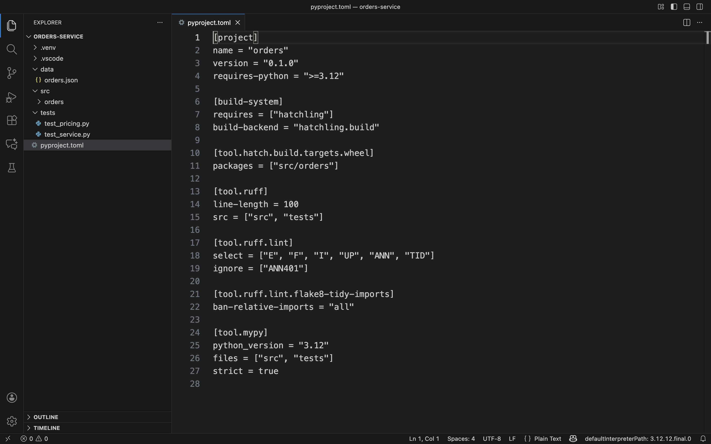
pyproject.toml. Пакет лежит в src/orders/, данные — в data/, тесты — в tests/.Ключевая строка — packages = ["src/orders"]. Она говорит сборщику, где искать пакет; папка src при этом в имя не попадает, снаружи модуль зовут orders. Ниже в том же файле лежат настройки Ruff и mypy — проверки живут вместе с проектом, а не в голове у того, кто их запускает.
За клавиатуру · установка пакета
Зачем папка src, если можно положить пакет в корень
Если orders/ лежит в корне проекта, интерпретатор находит его случайно — просто потому, что вы запустились из этой папки. Тогда тесты проходят у вас и падают в CI, где рабочая папка другая.
Папка src убирает эту случайность: из корня пакет не виден вообще. Чтобы import orders заработал, пакет надо установить. Команда pip install -e . ставит его «по ссылке»: файлы остаются на месте и правки видны сразу, но путь к ним прописан в окружении, а не угадан из текущей папки.
Цена — один лишний шаг при заведении проекта. Взамен запуск перестаёт зависеть от того, из какой папки его позвали, а это ровно то, что сломалось у нас на втором экране.
zsh · orders-service
$ pip install -e . Building editable for orders... Successfully installed orders-0.1.0 $ python -c "import orders; print(orders.__file__)" /private/tmp/orders-service/src/orders/__init__.py
Демонстрация · тот же прогон, что был на втором экране
python -m orders считает одинаково из любой папки
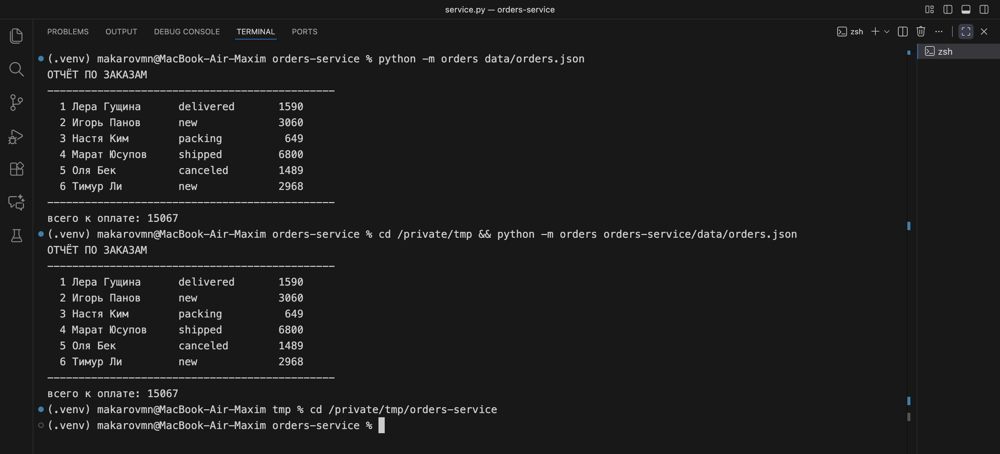
orders-service, снизу — из /private/tmp. Обе суммы: 15067.Изменились две вещи. Во-первых, путь к данным теперь приходит аргументом, а не берётся из текущей папки, — модуль __main__.py получает его через sys.argv и падает с понятным сообщением, если файла нет. Во-вторых, в столбце сумм больше нет дробных чисел: 3060 вместо 3060.0. Почему — разберём на экране про типы.
За клавиатуру · границы модулей
Правило разреза: один модуль — одна причина меняться
contracts.pyИмена типов, которыми разговаривают остальныеменяется, когда меняется форма заказаerrors.pyОшибки предметной областименяется, когда появляется новый вид отказаpricing.pyСкидка, доставка, итог заказаменяется, когда маркетинг меняет условияrules.pyСтатусы и то, что с ними можно делатьменяется, когда меняется процесс продажиstorage.pyЧтение и запись файламеняется, когда мы уйдём с JSON на базуservice.pyСценарии: найти, создать, отменитьменяется, когда появляется новый сценарийreport.pyПечать отчётаменяется, когда меняется вид отчётаПроверка разреза простая: назовите причину, по которой файл придётся открыть. Если причин две — например, «поменяли скидку» и «переехали на базу», — модуль нужно делить дальше. contracts и errors выделены цветом: их импортируют все, а сами они не импортируют ничего из пакета.
Карта импортов · состояние 2 из 5
Разрезали — но связей ещё нет
Так выглядит проект сразу после того, как код разложили по файлам: девять модулей и ни одной стрелки. Работать это ещё не будет — модули пока не знают друг о друге. Зато на этой картинке видно то, ради чего мы резали: у каждого прямоугольника своя причина меняться.
Разбор одного модуля · pricing.py
Деньги ничего не читают и никуда не пишут
На вход — заказ, на выход — число. Ни файла, ни печати, ни общей переменной. Поэтому pricing проверяется тестом за миллисекунды и без единого файла на диске.
Обратите внимание на // 100 вместо / 100. Целочисленное деление — это и есть починка того самого 3060.0: скидка считается в рублях и остаётся целым числом. Мы не «исправили опечатку», мы договорились, что деньги в этом сервисе — целые рубли, и записали договорённость в тип Money.
Цена решения честная: копейки таким способом не посчитать. Когда они понадобятся, менять придётся одно место — contracts.py, где Money и объявлен.
src/orders/pricing.py
from orders.contracts import Money, Order PROMO: dict[str, int] = {"WELCOME": 10, ...} FREE_DELIVERY_FROM: Money = 1500 def discount(order: Order) -> Money: """Неизвестный промокод скидки не даёт.""" percent = PROMO.get(order["promo"] or "", 0) return items_sum(order) * percent // 100 def total(order: Order) -> Money: return items_sum(order) - discount(order) + delivery(order)
Карта импортов · состояние 3 из 5
Связали: семнадцать стрелок, все сверху вниз
дверь пакетасценарии и выводправила, деньги, дискоснование: типы и ошибки
Правило чтения карты: стрелка идёт от того, кто зовёт, к тому, кого зовут. Все стрелки направлены вниз — значит, у графа есть порядок, и его можно собрать снизу вверх: сначала contracts, потом деньги и правила, потом сценарии, последней — дверь. Как только появится стрелка снизу вверх, порядок исчезнет; ровно это мы и устроим через несколько экранов.
За клавиатуру · дверь пакета
__init__.py — единственное место, где перечислено, что видно снаружи
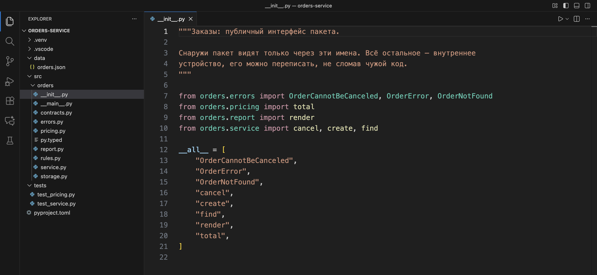
__all__: три ошибки, четыре функции и один расчёт. Всё остальное содержимое девяти модулей — внутреннее.Список __all__ — это не украшение. Он говорит две вещи: что попадёт наружу при from orders import * и, главное, что мы обещаем не ломать. Имена из этого списка нельзя переименовать, не предупредив тех, кто ими пользуется; всё, чего в списке нет, можно переписывать свободно.
Лента публичной поверхности
Восемь имён наружу из тридцати одного
cancelcreatefindrendertotalOrderErrorOrderNotFoundOrderCannotBeCanceled
items_sumdiscountdeliveryPROMOFREE_DELIVERY_FROMDELIVERY_PRICEcan_cancelis_activeFINAL_STATUSESMANAGER_LIMITread_orderswrite_ordersnext_idformat_linepayableWIDTHMoneyOrderIdStatusItemOrdermainDEFAULT_PATH
Синим — то, что перечислено в __all__. Серым — всё остальное: двадцать три имени, которые живут внутри пакета.
Соотношение и есть смысл публичного интерфейса. Наружу выходит ровно то, чем пользуются, а не всё, что удалось написать. Чем короче синяя строка, тем меньше у нас связано руки при следующей переделке.
Демонстрация · редактор считает за нас
Публичное имя стоит в пяти файлах, внутреннее — в одном
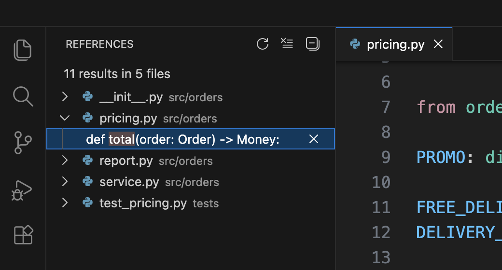
total — публичное имя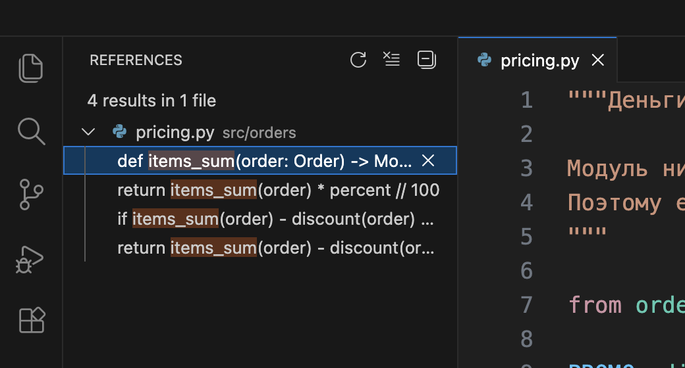
items_sum — внутреннее имяОдиннадцать обращений в пяти файлах: дверь, отчёт, сценарии, тесты и сам модуль. Переименование — разговор с четырьмя чужими файлами.
Четыре обращения внутри одного модуля. Переименовать можно за секунду, и никто снаружи этого не заметит.
Это и есть практическая разница между публичным и внутренним. Не «хороший стиль», а количество файлов, которые придётся открыть, когда решение окажется неудачным.

Термин 2 · аннотация типа
Тип — это записанное обещание про вход и выход
Пометка рядом с аргументом и после стрелки: def total(order: Order) -> Money. Интерпретатор её не проверяет и на скорость не влияет — она нужна людям и программам, которые читают код.
Отдельная программа — мы берём mypy — читает весь пакет, сверяет вызовы с аннотациями и выписывает несовпадения. Запуска при этом не происходит: анализ идёт по тексту.
проверка до запускаАннотация на публичной функции говорит вызывающему, что ему разрешено передать. Половина ошибок «передали не то» ловится в редакторе, ещё до того, как код попал в Pull Request.
ошибка ловится раньшеДальше по курсу это окупится дважды: FastAPI строит схему запроса прямо из аннотаций, а SQLAlchemy — описание таблиц. Поэтому типы мы ставим не «для красоты», а как заготовку под следующие занятия.
Псевдонимы типов · contracts.py
Своё имя типа объясняет смысл, которого нет у int
Строка type Money = int не создаёт новый тип — она даёт имя существующему. Проверка от такой записи не станет строже, зато читатель def total(order: Order) -> Money сразу знает: вернётся сумма в рублях, а не количество позиций.
Отдельно стоит Status. Это Literal из пяти строк, и он работает уже как настоящая проверка: order["status"] = "cancelled" с двумя «l» mypy пометит как ошибку, потому что такого значения в списке нет. Пять статусов записаны один раз и одинаково видны всем модулям.
Полноценные типы для идентификатора и статуса — с проверкой значения при создании — мы сделаем на следующем занятии через dataclass и Enum. Сегодня достаточно того, что имена собраны в одном файле.
src/orders/contracts.py
type OrderId = int type Money = int Status = Literal["new", "packing", "shipped", "delivered", "canceled"] class Item(TypedDict): name: str price: Money qty: int class Order(TypedDict): id: OrderId customer: str status: Status promo: str | None items: list[Item] created_at: str
Демонстрация · что видит проверка в старом файле
Тот же orders.py, только с включённым mypy
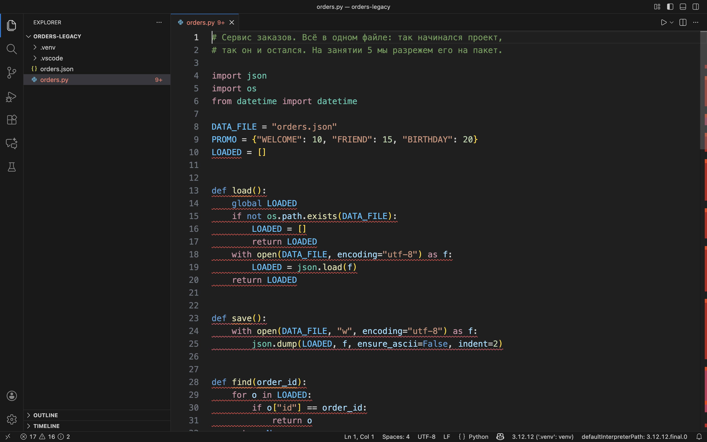
17 ошибок mypy и 16 замечаний Ruff.Такой экран пугает, но читать его надо иначе: это не семнадцать поломок, а семнадцать мест, где программа ничего не обещает. Большинство строк — одно и то же замечание «у функции не написан тип». Важна другая, одна.
Диагностика · одна строка из тридцати пяти
Проверка нашла причину 3060.0, не запуская программу
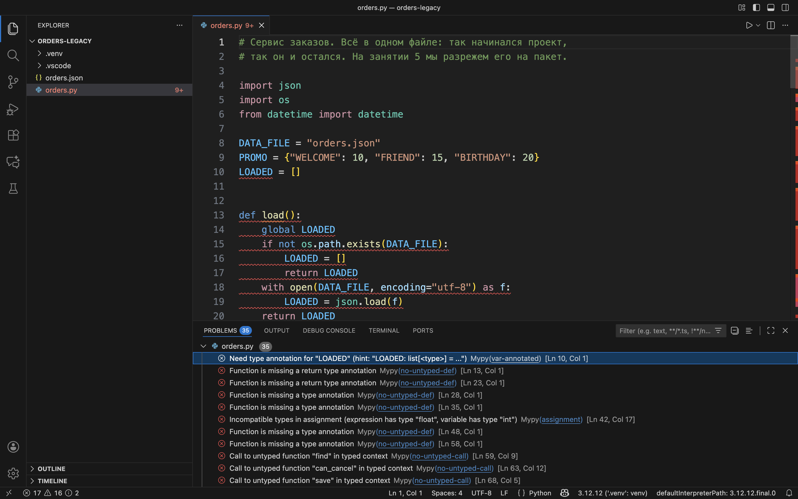
Incompatible types in assignment (expression has type "float", variable has type "int") [Ln 42, Col 17].Строка 42 — это s = s - s * p / 100 внутри total(). Переменная начиналась целым числом, а деление сделало её дробным. Ровно поэтому в отчёте на втором экране рядом стояли 1590 и 3060.0. Мы увидели причину, ни разу не запустив отчёт.
Демонстрация · вызов с неверными аргументами
Ошибка подчёркнута до того, как код кто-то запустил
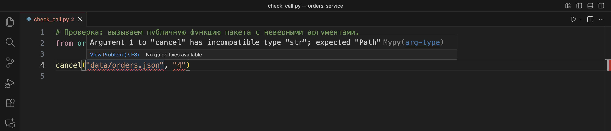
cancel("data/orders.json", "4") — оба аргумента подчёркнуты, подсказка называет ожидаемый тип.Функция ждёт Path и int, а получила две строки. Без типов такой вызов дожил бы до запуска и упал бы позже и в другом месте: path.exists() у строки не существует. Сообщение expected "Path" подсказывает и починку — обернуть в Path(...).
Важная деталь. Чтобы mypy увидел типы установленного пакета, внутри src/orders/ лежит пустой файл py.typed. Без него проверка честно скажет: «модуль установлен, но разметки типов не заявлено», — и промолчит про ошибку.
Практика · семь минут, чужой код
Разметьте границы: расписание аудиторий
Справа — один файл на другую тему. Ваша задача не переписать его, а разложить восемь функций по модулям и назвать причину, по которой каждый модуль придётся открыть.
- 1Выпишите функции в столбик
- 2Рядом с каждой — что она делает: считает, читает, печатает, решает
- 3Сгруппируйте одинаковые и дайте группе имя файла
- 4Нарисуйте стрелки: кто кого зовёт
Разбор через семь минут. Если у двоих получилось разное деление — это нормально, обсудим цену каждого варианта.
schedule.py · заготовка на паре
def load_rooms() # читает rooms.csv def save_bookings() # пишет bookings.json def is_free(room, slot) # свободна ли аудитория def capacity_ok(room, group) def book(room, group, slot) def cancel_booking(id) def print_day(date) # печатает расписание дня def conflicts(date) # находит накладки
Термин 3 · циклический импорт
Два модуля, которые ждут друг друга
Модуль A импортирует B, а B — обратно A. На карте это стрелка, идущая назад: порядка сборки больше нет, начинать не с чего.
Импорт выполняет файл сверху вниз. Дойдя до встречной строки, интерпретатор возвращается в модуль, который ещё не дочитан, и нужного имени там пока нет. Отсюда слова partially initialized module.
падает на импортеПочти всегда — из-за неверной границы: обязанность попала не в тот модуль. Цикл не «ошибка Python», а сообщение о том, что разрез сделан не там.
симптом, а не причинаДальше мы устроим цикл специально. Задача бизнеса правдоподобная: заказ дороже пяти тысяч отменяет только менеджер. Значит, правило отмены должно знать сумму — а сумму считает pricing.
Ломаем намеренно · два файла рядом
Каждый импортирует другого — и оба выглядят разумно
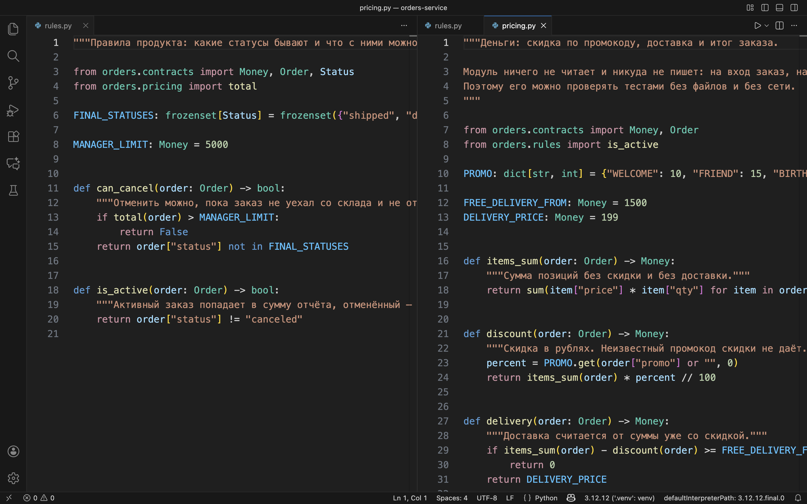
rules.py, строка 4: from orders.pricing import total. Справа pricing.py, строка 8: from orders.rules import is_active.По отдельности обе строки оправданы. Правилу отмены нужна сумма — значит, зовём total. Расчёту незачем считать отменённый заказ — значит, спрашиваем is_active. Каждый программист написал разумную строку в своём файле, и вместе они дали цикл.
Отказ · traceback читаем снизу вверх
Сообщение об ошибке — это и есть карта цикла
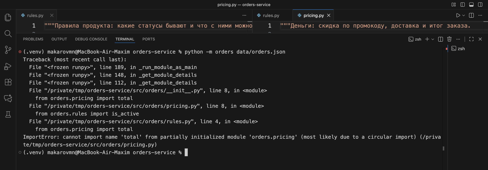
python -m orders data/orders.json — программа не дошла до первой строчки отчёта.В трассировке три файла подряд: __init__.py → pricing.py → rules.py → и снова pricing.py. Последняя строка называет и место, и диагноз: cannot import name 'total' from partially initialized module 'orders.pricing' (most likely due to a circular import). Читать такую трассировку надо снизу: внизу диагноз, выше — путь, по которому к нему пришли.
Карта импортов · состояние 4 из 5
Та же карта, две красные стрелки
встречные стрелки: rules ⇄ pricingостальные семнадцать не изменились
Собрать граф снизу вверх больше нельзя: чтобы построить pricing, нужен rules, а чтобы построить rules — нужен pricing. Заметьте, что карта показала это раньше, чем запуск: две встречные стрелки видно глазами, а traceback появляется только после команды.
Починка · три способа и цена каждого
Разорвать цикл можно по-разному, но не любой способ чинит причину
Перенести from orders.pricing import total внутрь тела can_cancel. Запуск починится за минуту. Но стрелка никуда не делась — она просто стала невидимой на карте и появится снова при следующем разрезе.
Свести rules и pricing обратно в один файл. Цикл исчезнет вместе с границей — и вместе с возможностью менять условия скидок, не трогая правила продажи.
can_cancel(order, order_total) принимает сумму параметром. Правилу нужна была сумма, а не модуль, который её считает. Стрелка исчезает по-настоящему, а решение «кто кого зовёт» поднимается на уровень выше — в service.
Мы берём третий. Общее правило пригодится и дальше в курсе: когда два модуля тянутся друг к другу, посмотрите, какие именно данные им нужны, и пусть их передаст тот, кто вызывает обоих.
Результат починки
rules больше не знает про деньги, а service знает про обоих
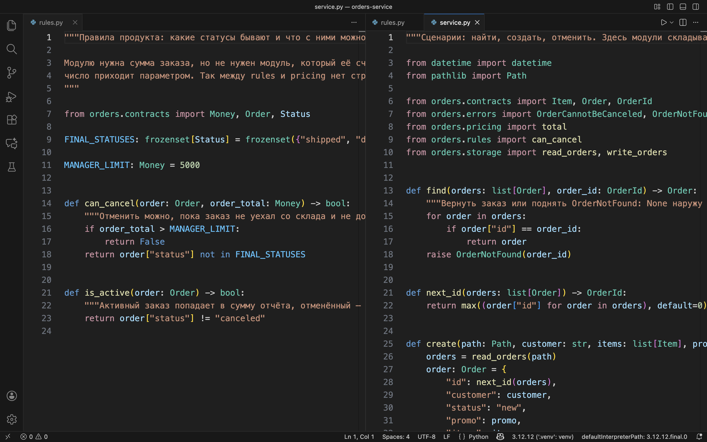
rules.py: импортируется только contracts, сумма приходит параметром order_total. Справа service.py, строки 8–9: он зовёт и total, и can_cancel.Строка if not can_cancel(order, total(order)) в service.py — то самое место, где два модуля встретились. Оно ровно одно, оно наверху графа, и его видно.
Контроль · три команды подряд
Проверки говорят одно и то же тремя способами
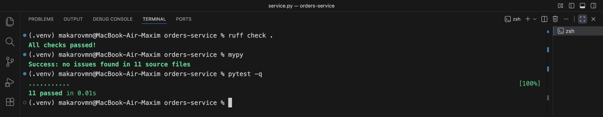
ruff check .оформление и импорты: порядок, лишнее, забытые аннотации. Быстрее всех, ловит меньше всехmypyсогласованность типов по всем одиннадцати файлам. Программу не запускаетpytest -qодиннадцать проверок поведения: границы скидки, доставка ровно на пороге, отмена уехавшего заказаТри инструмента не заменяют друг друга: Ruff не знает, что Money — это рубли, mypy не знает, что доставка ровно на 1500 бесплатна, а pytest не поймает лишнюю строку в вызове, если такого теста никто не написал.

Справка · оставьте себе
Сообщение об ошибке → что не так с границей
ModuleNotFoundError: No module named 'orders'Пакет не установлен или установлен в другое окружение. Проверьте pip install -e . и то, что в строке приглашения стоит (.venv).ImportError: cannot import name 'X' from partially initialized module (most likely due to a circular import)Цикл импорта. Смотрите трассировку снизу вверх: два файла в ней повторяются — это и есть встречные стрелки.AttributeError: partially initialized module 'orders.pricing' has no attribute 'total'Тот же цикл, только импорт был написан как import orders.pricing. Диагноз и починка те же.ImportError: attempted relative import with no known parent packageФайл запустили напрямую вместо python -m orders. Относительный импорт работает только внутри пакета.Skipping analyzing "orders": module is installed, but missing library stubs or py.typed markerНет файла py.typed внутри пакета. mypy не считает пакет типизированным и молчит про ошибки в вызовах.всего к оплате: 0 без единой ошибкиОтносительный путь к данным. Файл искали от текущей папки, не нашли и посчитали по пустому списку. Путь должен приходить параметром.Практика · оставшееся время пары
Что вы делаете со своим orders.py
01
Заведите ветку и перенесите код в
src/orders/Ветка lesson-05 от своей main. Файл режете на модули по правилу «одна причина меняться» — минимум пять модулей плюс __init__.py.02
Соберите
pyproject.toml и установите пакетpackages = ["src/<имя>"], настройки Ruff и mypy, затем pip install -e .. Проверка: python -c "import <имя>" отрабатывает из любой папки.03
Типизируйте все публичные функцииАргументы и возвращаемое значение. Имена типов вынесите в
contracts.py. Не забудьте пустой py.typed рядом с __init__.py.04
Соберите публичный интерфейс
__init__.py с импортами и __all__. В списке — только то, чем пользуются снаружи. Посчитайте, сколько имён получилось наружу и сколько осталось внутри.05
Сломайте намеренноЗаведите встречный импорт между двумя модулями, запустите, сохраните трассировку в
docs/incident-05.md и разорвите цикл третьим способом — передачей данных.06
Прогоните три проверки
ruff check ., mypy, pytest -q. Одну найденную ошибку mypy разберите письменно: что он увидел и почему это действительно ошибка.07
Нарисуйте карту импортов
docs/import-map.md: модуль, его причина меняться и список тех, кого он импортирует. Стрелок снизу вверх быть не должно.08
Pull RequestВ описании: сколько было файлов и стало модулей, что вынесли в публичный интерфейс, где был цикл и как его убрали.
Контроль · как я принимаю работу
Проверяю не количество файлов, а то, что границы держат
01Запуск из чистого состоянияКлонирую вашу ветку в пустую папку, создаю окружение, ставлю пакет и запускаю. Работает без подсказок — принято.
02Запуск из другой папкиПерехожу на уровень выше и запускаю ещё раз. Числа должны совпасть с первым прогоном.
03Один отказПоказываете сохранённую трассировку цикла и то место, где вы разорвали связь. Называете, какой обязанности не хватало у модуля.
04Три проверки
ruff, mypy и pytest проходят. Одну ошибку mypy вы объясняете: что он увидел и почему это ошибка, а не придирка.05Карта импортовСовпадает с кодом, стрелок снизу вверх нет. По карте отвечаете: что придётся открыть, если завтра мы уйдём с JSON на PostgreSQL.
06Границы решенияНазываете, что ваш пакет пока не умеет и где вы сознательно упростили. Это не минус — это понимание того, что вы сделали.
Карта импортов · состояние 5 из 5 · итог занятия
Было и стало
Один модуль на 105 строк стал пакетом из девяти модулей и 238 строк вместе с документацией.
DATA_FILE, LOADED и порядок вызовов исчезли. Данные передаются параметрами.
Из тридцати одного имени пакета публичны восемь. Остальные двадцать три можно переписать молча.
Ruff и mypy молчат, одиннадцать тестов проходят, отчёт считает одинаково из любой папки.
Ни одно из этих чисел не про красоту кода. Каждое отвечает на вопрос «сколько мест придётся открыть, когда что-то изменится»: новая скидка — один файл, переезд на базу — один файл, новый статус — один файл.
Границы темы · чего сегодня не было
Что мы сознательно оставили на потом
- з.6
dataclass,Enumи value objects — статус и идентификатор с проверкой значения - з.7Иерархия доменных ошибок целиком и контекстные менеджеры для ресурсов
- з.8
Protocolи внедрение зависимостей: подменаstorageна фальшивую реализацию в тестах - з.9Асинхронность: почему
storageсегодня синхронный и что изменится - р.4Схемы Pydantic и FastAPI: те же типы, но уже на границе HTTP
Отдельно: мы не трогали метаклассы, дескрипторы и динамическое создание модулей. Они существуют, но ни одна задача курса без них не решается, а читать такой код заметно труднее.
Домашнее задание № 2
Максим Николаевич не хочет задавать вам домашнее задание. Но очень хочет.
- 1Разрежьте
library.pyна пакет: выдача книг, читатели, штрафы - 2Соберите
__init__.pyи посчитайте публичные имена - 3Заведите цикл специально и опишите, как его убрали
- 4Нарисуйте карту импортов в
docs/import-map.md
Файл
Папка
lesson_05/: пакет, тесты и два файла в docs/.Ветка и PR
Ветка
hw-05, Pull Request в свою main с описанием «было → стало».Срок
До следующего занятия. Заготовка уже лежит в
lesson_05/homework/.Проверяю
Запуск из чистого клона, молчащие
ruff и mypy, карта совпадает с кодом.Про ИИ: сначала режете сами. Границы придумываете вы, объяснять их на review тоже вам.
Что дальше
Занятие 6 · dataclass, Enum и value objects
Сегодня Status — это пять строк в Literal, а идентификатор заказа — обычный int. Работает, но проверки значения нет: OrderId(-3) никого не смутит, а "cancelled" с двумя «l» поймает только mypy и только там, где мы поставили аннотацию.
3value objects: идентификатор, статус, контакт
4граничных теста на каждый
1вопрос: что должно быть неизменяемым
Начнём с короткой проверки: соберу два-три ваших пакета из чистого клона и запущу. Что не поднимется — чиним первые пятнадцать минут, дальше новая тема.